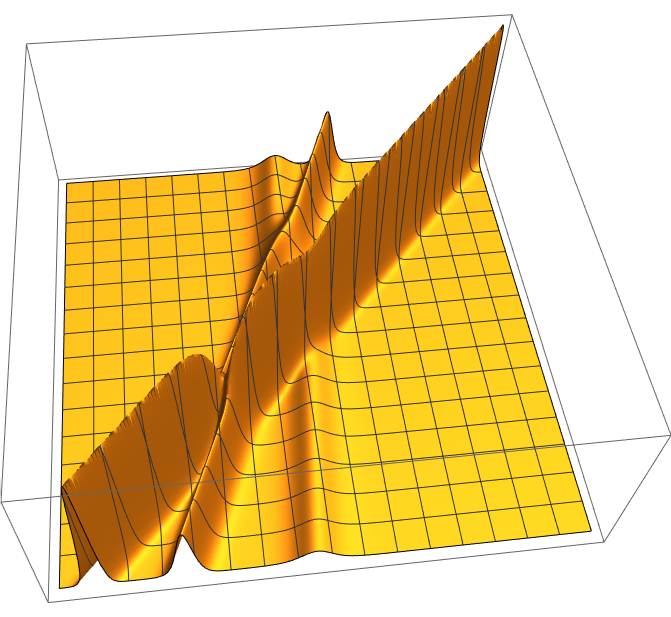

・\(u(x,\,t)\) は \(x\) 軸の正方向に進む波の 時刻 \(t\), 位置 \(x\) における波の振幅
・1-ソリトン解
\[u(x,\,t)=\frac{v}{2}\mathrm{sech}^2\left[\frac{\sqrt{v}}{2}(x-vt-\theta)\right]\;\;\;\left(\theta=-\frac{2c}{\sqrt{v}},\,c:任意定数\right)\]
\[\theta:\,\mbox{ソリトンの(初期)位相},\;t=0\,における振幅のピーク位置\]
導出
速度 \(v\) で形を変えずに \(x\) 軸正方向に進む波: \[u(x,\,t)=f(x-vt)=f(\xi)\;\;\bigl(\xi:=x-vt\bigr)\]
これをKdV方程式に代入すると、\(u_x=f'\xi_x=f',\,u_t=f'\xi_t=-vf'\) より、
\begin{align*}
0&=-vf'(\xi)+6f(\xi)f'(\xi)+f'''(\xi)\\
&=\Bigl(-vf(\xi)+3f(\xi)^2+f''(\xi)\Bigr)'
\end{align*}
\[\Rightarrow\;-vf(\xi)+3f(\xi)^2+f''(\xi)=\mathrm{const}\;\;\cdots(1)\]
孤立波の特性上 \(t\) を任意の有限の値に固定すると \(u,\,u_x,\,u_{xx}\rightarrow{0}\;(x\rightarrow\pm\infty)\) を満たすため、
\[f,\,f',\,f''\rightarrow0\;\;(\xi\rightarrow\pm\infty)\;\;\cdots(\ast)\]
となり、\((1)\) の右辺は 0 となる。また、
\begin{align*}
0=(1)*f'(\xi)&=-vf(\xi)f'(\xi)+3f(\xi)^2f'(\xi)+f'(\xi)f''(\xi)\\
&=\Bigl(-\frac{v}{2}f(\xi)^2+f(\xi)^3+\frac{1}{2}f'(\xi)^2\Bigr)'
\end{align*}
\[\Rightarrow\;-\frac{v}{2}f(\xi)^2+f(\xi)^3+\frac{1}{2}f'(\xi)^2=\mathrm{const}=0\;\because(\ast)\]
ここで、\(v\) 依存性をなくすため、各項が \(v^3\) になるよう、
\[f(\xi)=\frac{v}{2}y(\eta),\;\eta:=\frac{\sqrt{v}}{2}\xi\]
と変数変換をすると、
\begin{align*}
0&=-\frac{v}{2}\cdot\frac{v^2}{4}y(\eta)^2+\frac{v^3}{8}y(\eta)^3+\frac{1}{2}\cdot\frac{v^3}{16}y'(\eta)^2\\
&=-y(\eta)^2+y(\eta)^3+\frac{1}{4}y'(\eta)^2
\end{align*}
そして \(\displaystyle\frac{1}{y(\eta)}=z(\eta)^2\) とおくと、
\begin{align*}
z'(\eta)&=\left(\pm\sqrt{\frac{1}{y(\eta)}}\right)'\\
&=\pm\left(-\frac{1}{2}y(\eta)^{-\frac{3}{2}}\cdot{y'(\eta)}\right)
\end{align*}
ここで、
\begin{gather*}
-y(\eta)^2+y(\eta)^3+\frac{1}{4}y'(\eta)^2=0\\
\Leftrightarrow\;y(\eta)^2\bigl(1-y(\eta)\bigr)=\frac{1}{4}y'(\eta)^2\\
\Leftrightarrow\;\frac{1-y(\eta)}{y(\eta)}=\frac{1}{4}y(\eta)^{-3}y'(\eta)^2\\
\end{gather*}
となることから、
\[z'(\eta)=\pm\sqrt{\frac{1-y(\eta)}{y(\eta)}}=\pm\sqrt{\frac{1}{y(\eta)}-1}=\pm\sqrt{z(\eta)^2-1}\]
これを解くと、
\begin{align*}
&\frac{dz(\eta)}{d\eta}=\pm\sqrt{z(\eta)^2-1}\\
&\pm\int\frac{1}{\sqrt{z^2-1}}dz=\int d\eta\\
&\pm\int\frac{\sinh{t}}{\sqrt{\cosh^2{t}-1}}dt=\eta+C_1\\
&\pm\int dt=\eta+C_1\\
&\pm(\cosh^{-1}{z}+C_2)=\eta+C_1
\end{align*}
\[\therefore z=\pm\cosh(\eta+c)\]
よって、
\begin{align*}
u(x,\,t)&=f(\xi)\\
&=\frac{v}{2}y(\eta)\\
&=\frac{v}{2}\cdot\frac{1}{\cosh^2(\eta+c)}\\
&=\frac{v}{2}\mathrm{sech}^2(\eta+c)\\
&=\frac{v}{2}\mathrm{sech}^2\left[\frac{\sqrt{v}}{2}\xi+c\right]\\
&=\frac{v}{2}\mathrm{sech}^2\left[\frac{\sqrt{v}}{2}(x-vt)+c\right]\\
&=\frac{v}{2}\mathrm{sech}^2\left[\frac{\sqrt{v}}{2}(x-vt-\theta)\right]\;\;\left(\theta=-\frac{2c}{\sqrt{v}},\,c:任意定数\right)
\end{align*}
導出 (広田の直接法)
\[
u(x,\,t)=2\frac{\partial^2\log{\tau(x,\,t)}}{\partial{x}^2}\;\;\cdots(1)
\]
をKdV方程式に代入すると、
\begin{align*}
u_t&=2\bigl(\log(\tau)\bigr)_{xxt}\\
&=2\left(\frac{\tau_x}{\tau}\right)_{xt}\\
&=2\left(\frac{\tau\tau_{xt}-\tau_x\tau_t}{\tau^2}\right)_x\\
6uu_x&=(3u^2)_x\\
&=3\left\{\left(2\frac{\tau\tau_{xx}-\tau_x^2}{\tau^2}\right)^2\right\}_x\\
&=12\left(\frac{\tau^2\tau_{xx}^2-2\tau\tau_x^2\tau_{xx}+\tau_x^4}{\tau^4}\right)_x\\
u_{xxx}&=\left(2\frac{\tau\tau_{xx}-\tau_x^2}{\tau^2}\right)_{xxx}\\
&=2\left(\frac{\tau^3\tau_{xxxx}-3\tau^2\tau_{xx}^2-4\tau^2\tau_x\tau_{xxx}+12\tau\tau_x^2\tau_{xx}-6\tau_{x}^4}{\tau^4}\right)_x
\end{align*}
となるため、
\begin{align*}
0&=u_t+6uu_x+u_{xxx}\\
&=\left(2\frac{\tau\tau_{xt}-\tau_x\tau_t}{\tau^2}+12\frac{\tau^2\tau_{xx}^2-2\tau\tau_x^2\tau_{xx}+\tau_x^4}{\tau^4}\right.\\&\;\;\;\;\;\;\;\;\left.+2\frac{\tau^3\tau_{xxxx}-3\tau^2\tau_{xx}^2-4\tau^2\tau_x\tau_{xxx}+12\tau\tau_x^2\tau_{xx}-6\tau_{x}^4}{\tau^4}\right)_x\\
&=\left(2\frac{\tau\tau_{xt}-\tau_x\tau_t}{\tau^2}+2\frac{\tau\tau_{xxxx}+3\tau_{xx}^2-4\tau_x\tau_{xxx}}{\tau^2}\right)_x\\
&=\left(\frac{2}{\tau^2}\left\{\tau\tau_{xt}-\tau_x\tau_t+3\tau_{xx}^2+\tau\tau_{xxxx}-4\tau_x\tau_{xxx}\right\}\right)_x
\end{align*}
これより、
\[\tau\tau_{xt}-\tau_x\tau_t+\tau\tau_{xxxx}+3\tau_{xx}^2-4\tau_x\tau_{xxx}=0\;\;\cdots(2)\]
を満たす \(\tau(x,\,t)\) 及び、(1)から生成される \(u(x,\,t)\) はKdV方程式の解となることがわかる。
ここで、広田のD-operator
\[D_x^mD_t^n f(x,\,t)\cdot{}g(x,\,t):=\frac{\partial^m}{\partial{y}^m}\frac{\partial^n}{\partial{s}^n}f(x+y,\,t+s)\,g(x-y,\,t-s)\Bigr|_{y=0,\,s=0}\]
\[f(x,\,t),\,g(x,\,t):\,任意の関数,\;\;n,\,m\in\mathbb{N}_0\]
を用いると(2)式は、
\[\mbox{広田の双線型形式: }D_x(D_t+D_x^3)\tau(x,\,t)\cdot\tau(x,\,t)=0\;\;\cdots(3)\]
となる。
そして \(\tau(x,\,t)\) の摂動展開は、
\[\tau=1+\varepsilon\tau_1+\varepsilon^2\tau_2+\varepsilon^3\tau+\cdots\]
\(\tau=1\) は(3)を満たすから、\(\varepsilon\)のべきで整理して、
\begin{alignat*}{3}
\varepsilon\;&:\,D_x(D_t+D_x^3)(\tau_1\cdot1+1\cdot\tau_1)=0&\hspace{20pt}(\ast_1)\\
\varepsilon^2&:\,D_x(D_t+D_x^3)(\tau_2\cdot1+\tau_1\cdot\tau_1+1\cdot\tau_2)=0&\hspace{20pt}(\ast_2)\\
\varepsilon^3&:\,D_x(D_t+D_x^3)(\tau_3\cdot1+\tau_2\cdot\tau_1+\tau_1\cdot\tau_2+1\cdot\tau_3)=0&\hspace{20pt}(\ast_3)\\
\varepsilon^4&:\,D_x(D_t+D_x^3)(\tau_4\cdot1+\tau_3\cdot\tau_1+\tau_2\cdot\tau_2+\tau_1\cdot\tau_3+1\cdot\tau_4)=0&\hspace{20pt}(\ast_4)\\
\vdots
\end{alignat*}
を満たす \(\tau_1,\,\tau_2,\ldots\) からなる \(\tau\) は(3)を満たす。
・\((\ast_1)\) を満たす \(\tau_1\) を考える。
・\((\ast_2)\) を満たす \(\tau_2\) を考える。
・\((\ast_3)\) を満たす \(\tau_3\) を考える。
・\((\ast_n)\;(n>1)\) を満たす \(\tau_n\) を考える。
よって、
\[\tau=1+\varepsilon e^{k_1x-k_1^3t+\theta_1}\]
及び、\(\theta_1\log{\varepsilon}\) を \(\theta_1\) と置きなおして、
\[\tau=1+e^{k_1x-k_1^3t+\theta_1}\]
は(3)式を満たす。(2)式から \(u(x,\,t)\) を求めると、
\begin{align*}
u(x,\,t)
&=2\frac{\partial^2\log(\tau(x,\,t))}{\partial{x}^2}\\
&=2\left(\frac{k_1e^{k_1x-k_1^3t+\theta_1}}{1+e^{k_1x-k_1^3t+\theta_1}}\right)_x\\
&=2\frac{(1+e^{k_1x-k_1^3t+\theta_1})k_1^2e^{k_1x-k_1^3t+\theta_1}-k_1^2e^{2(k_1x-k_1^3t+\theta_1)}}{(1+e^{k_1x-k_1^3t+\theta_1})^2}\\
&=2k_1^2\frac{e^{k_1x-k_1^3t+\theta_1}}{(1+e^{k_1x-k_1^3t+\theta_1})^2}\\
&=2v\left(\frac{e^{\frac{1}{2}(k_1x-k_1^3t+\theta_1)}}{1+e^{k_1x-k_1^3t+\theta_1}}\right)^2\\
&=\frac{k_1^2}{2}\left(\frac{2}{e^{-\frac{1}{2}(k_1x-k_1^3t+\theta_1)}+e^{\frac{1}{2}(k_1x-k_1^3t+\theta_1)}}\right)^2\\
&=\frac{k_1^2}{2}\mathrm{sech}^2\left[\frac{1}{2}(k_1x-k_1^3t+\theta_1)\right]\\
&=\frac{k_1^2}{2}\mathrm{sech}^2\left[\frac{k_1}{2}(x-k_1^2t+\theta_1)\right]
\end{align*}
そして、\(u(x,\,t)=u(x-k_1^2t)\) の形で書けるので、速度 \(v=k_1^2\) で進行することがわかる。
確認
\(\partial_xf(x+y)=\partial_yf(x+y),\,\partial_xf(x-y)=-\partial_yf(x-y),\,\) より、
\begin{align*}
&D_xD_t\\
&=\frac{\partial}{\partial{y}}\frac{\partial}{\partial{s}}f(x+y,\,t+s)\,g(x-y,\,t-s)\Bigr|_{y=0,\,s=0}\\
&=\frac{\partial}{\partial{y}}\Bigl(f_{t}(x+y,\,t+s)\,g(x-y,\,t-s)-f(x+y,\,t+s)\,g_{t}(x-y,\,t-s)\Bigr)\Bigr|_{y=0,\,s=0}\\
&=\Bigl(f_{xt}(x+y,\,t+s)\,g(x-y,\,t-s)-f_{t}(x+y,\,t+s)\,g_{x}(x-y,\,t-s)\\
&\hspace{50pt}-\Bigl\{f_{x}(x+y,\,t+s)\,g_{t}(x-y,\,t-s)-f(x+y,\,t+s)\,g_{xt}(x-y,\,t-s)\Bigr\}\Bigr)\Bigr|_{y=0,\,s=0}\\
&=f_{xt}(x,\,t)\,g(x,\,t)-f_{t}(x,\,t)\,g_{x}(x,\,t)-f_{x}(x,\,t)\,g_{t}(x,\,t)+f(x,\,t)\,g_{xt}(x,\,t)\\
&=f_{xt}g-f_{t}g_{x}-f_{x}g_{t}+fg_{xt}\\
&\\
&D_x^4\\
&=\frac{\partial^4}{\partial{y}^4}f(x+y,\,t+s)\,g(x-y,\,t-s)\Bigr|_{y=0,\,s=0}\\
&=\frac{\partial^3}{\partial{y}^3}\Bigl(f_{x}(x+y,\,t+s)\,g(x-y,\,t-s)-f(x+y,\,t+s)\,g_{x}(x-y,\,t-s)\Bigr)\Bigr|_{y=0,\,s=0}\\
&=\frac{\partial^2}{\partial{y}^2}\Bigl(f_{xx}(x+y,\,t+s)\,g(x-y,\,t-s)-f_{x}(x+y,\,t+s)\,g_{x}(x-y,\,t-s)\\
&\hspace{55pt}-\Bigl\{f_{x}(x+y,\,t+s)\,g_{x}(x-y,\,t-s)-f(x+y,\,t+s)\,g_{xx}(x-y,\,t-s)\Bigr\}\Bigr)\Bigr|_{y=0,\,s=0}\\
&=\frac{\partial^2}{\partial{y}^2}\Bigl(f_{xx}(x+y,\,t+s)\,g(x-y,\,t-s)-2f_{x}(x+y,\,t+s)\,g_{x}(x-y,\,t-s)\\
&\hspace{55pt}+f(x+y,\,t+s)\,g_{xx}(x-y,\,t-s)\Bigr)\Bigr|_{y=0,\,s=0}\\
&=\frac{\partial}{\partial{y}}\Bigl(f_{xxx}(x+y,\,t+s)\,g(x-y,\,t-s)-f_{xx}(x+y,\,t+s)\,g_{x}(x-y,\,t-s)\\
&\hspace{55pt}-2\Bigl\{f_{xx}(x+y,\,t+s)\,g_{x}(x-y,\,t-s)-f_{x}(x+y,\,t+s)\,g_{xx}(x-y,\,t-s)\Bigr\}\\
&\hspace{55pt}+f_{x}(x+y,\,t+s)\,g_{xx}(x-y,\,t-s)-f(x+y,\,t+s)\,g_{xxx}(x-y,\,t-s)\Bigr)\Bigr|_{y=0,\,s=0}\\
&=\frac{\partial}{\partial{y}}\Bigl(f_{xxx}(x+y,\,t+s)\,g(x-y,\,t-s)-3f_{xx}(x+y,\,t+s)\,g_{x}(x-y,\,t-s)\\
&\hspace{55pt}+3f_{x}(x+y,\,t+s)\,g_{xx}(x-y,\,t-s)-f(x+y,\,t+s)\,g_{xxx}(x-y,\,t-s)\Bigr)\Bigr|_{y=0,\,s=0}\\
&=\Bigl(f_{xxxx}(x+y,\,t+s)\,g(x-y,\,t-s)-f_{xxx}(x+y,\,t+s)\,g_{x}(x-y,\,t-s)\\
&\hspace{35pt}-3\Bigl\{f_{xxx}(x+y,\,t+s)\,g_{x}(x-y,\,t-s)-f_{xx}(x+y,\,t+s)\,g_{xx}(x-y,\,t-s)\Bigr\}\\
&\hspace{35pt}+3\Bigl\{f_{xx}(x+y,\,t+s)\,g_{xx}(x-y,\,t-s)-f_{x}(x+y,\,t+s)\,g_{xxx}(x-y,\,t-s)\Bigr\}\\
&\hspace{35pt}-\Bigl\{f_x(x+y,\,t+s)\,g_{xxx}(x-y,\,t-s)-f(x+y,\,t+s)\,g_{xxxx}(x-y,\,t-s)\Bigr\}\Bigr)\\
&=f_{xxxx}(x,\,t)\,g(x,\,t)-4f_{xxx}(x,\,t)\,g_{x}(x,\,t)+6f_{xx}(x,\,t)\,g_{xx}(x,\,t)\\
&\hspace{10pt}-4f_{x}(x,\,t)\,g_{xxx}(x,\,t)+f(x,\,t)\,g_{xxxx}(x,\,t)\\
&=f_{xxxx}g-4f_{xxx}g_{x}+6f_{xx}g_{xx}-4f_{x}g_{xxx}+fg_{xxxx}
\end{align*}
となるので、
\begin{align*}
D_tD_x\tau(x,\,t)\cdot\tau(x,\,t)
&=\tau_{xt}\tau-\tau_t\tau_x-\tau_x\tau_t+\tau\tau_{xt}\\
&=2\tau\tau_{xt}-2\tau_t\tau_x\\
D_x^4\tau(x,\,t)\cdot\tau(x,\,t)
&=\tau_{xxxx}\tau-4\tau_{xxx}\tau_{x}+6\tau_{xx}\tau_{xx}-4\tau_{x}\tau_{xxx}+\tau\tau_{xxxx}\\
&=2\tau\tau_{xxxx}-8\tau_{x}\tau_{xxx}+6\tau_{xx}\tau_{xx}
\end{align*}
\[
D_tD_x\tau(x,\,t)\cdot\tau(x,\,t)+D_x^3\tau(x,\,t)\cdot\tau(x,\,t)
=2\bigl(\tau\tau_{xt}-\tau_x\tau_t+\tau\tau_{xxxx}+3\tau_{xx}^2-4\tau_x\tau_{xxx}\bigr)
\]
\begin{align*}
\therefore\;&\tau\tau_{xt}-\tau_x\tau_t+\tau\tau_{xxxx}+3\tau_{xx}^2-4\tau_x\tau_{xxx}=0\\
&\Leftrightarrow\;(D_tD_x\tau(x,\,t)+D_x^4)\tau(x,\,t)\cdot\tau(x,\,t)=0
\end{align*}
\begin{align*}
D_x(D_t+D_x^3)(\tau_1\cdot1+1\cdot\tau_1)
&=2D_x(D_t+D_x^3)\,\tau_1\cdot1\\
&=2\partial_x(\partial_t+\partial_x^3)\,\tau_1
\end{align*}
ここで、\(\tau_1=e^{k_1x-\omega_1t+\theta_1}\)とすると、(波としての性質: \(kx-\omega{t}\) + 指数関数)
\[\partial_x(-\omega_1+k_1^3)\tau_1=0\]
より、\(\omega_1=k_1^3\) はこの式を満たし、
\[\tau_1=e^{k_1x-k_1^3t+\theta_1}\]
は \((\ast_1)\) を満たす。
\begin{align*}
&D_x(D_t+D_x^3)(\tau_2\cdot1+\tau_1\cdot\tau_1+1\cdot\tau_2)\\
&=D_x(D_t+D_x^3)(2\tau_2\cdot1+\tau_1\cdot\tau_1)\\
&=2D_x(D_t+D_x^3)\,\tau_2\cdot1
\end{align*}
より、\(\tau_2=0\) は \((\ast_2)\) を満たす。
\begin{align*}
&D_x(D_t+D_x^3)(\tau_3\cdot1+\tau_2\cdot\tau_1+\tau_1\cdot\tau_2+1\cdot\tau_3)\\
&=D_x(D_t+D_x^3)(\tau_3\cdot1+1\cdot\tau_3)\\
&=2D_x(D_t+D_x^3)\,\tau_3\cdot1
\end{align*}
より、\(\tau_3=0\) は \((\ast_3)\) を満たす。
\(\tau_0=1\) とおくと、
\[(\ast_n)\Leftrightarrow D_x(D_t+D_x^3)\sum_{i+j=n\\i,\,j\geqq{0}}\tau_i\cdot\tau_j=0\]
\(\tau_2=\tau_3=\cdots=\tau_{n-1}=0\) とすると、
\begin{align*}
&D_x(D_t+D_x^3)\sum_{i+j=n\\i,\,j\geqq{0}}\tau_i\cdot\tau_j\\
&=D_x(D_t+D_x^3)(\tau_n\cdot1+1\cdot\tau_n)\\
&=2D_x(D_t+D_x^3)\,\tau_n\cdot1
\end{align*}
より、\(\tau_n=0\) は \((\ast_n)\) を満たす。
・2-ソリトン解
\[u(x,\,t)=2\frac{\partial^2\log(\tau(x,\,t))}{\partial{x}^2}\]
\[\tau(x,\,t)=1+e^{\eta_1}+e^{\eta_2}+e^{\eta_1+\eta_2+A_{12}}\]
\[\begin{cases}
0<p_1,\,p_2\\
p_1\neq{p_2}\\
\theta_1,\,\theta_2:任意の実定数\\
\eta_i:=p_ix-p_i^3t-\theta_i\\
\displaystyle e^{A_{12}}=\frac{(p_1-p_2)^2}{(p_1+p_2)^2}\\
\end{cases}\]
導出 (広田の直接法)
\[\mbox{広田の双線型形式: }D_x(D_t+D_x^3)\tau(x,\,t)\cdot\tau(x,\,t)=0\;\;\cdots(1)\]
を用いる。(証明は1-ソリトン解に)
1-ソリトン解と同様に、\(\tau(x,\,t)\) の摂動展開は、 \[\tau=1+\varepsilon\tau_1+\varepsilon^2\tau_2+\varepsilon^3\tau+\cdots\] \(\tau=1\) は(1)を満たすから、\(\varepsilon\)のべきで整理して、 \begin{alignat*}{3} \varepsilon\;&:\,D_x(D_t+D_x^3)(\tau_1\cdot1+1\cdot\tau_1)=0&\hspace{20pt}(\ast_1)\\ \varepsilon^2&:\,D_x(D_t+D_x^3)(\tau_2\cdot1+\tau_1\cdot\tau_1+1\cdot\tau_2)=0&\hspace{20pt}(\ast_2)\\ \varepsilon^3&:\,D_x(D_t+D_x^3)(\tau_3\cdot1+\tau_2\cdot\tau_1+\tau_1\cdot\tau_2+1\cdot\tau_3)=0&\hspace{20pt}(\ast_3)\\ \varepsilon^4&:\,D_x(D_t+D_x^3)(\tau_4\cdot1+\tau_3\cdot\tau_1+\tau_2\cdot\tau_2+\tau_1\cdot\tau_3+1\cdot\tau_4)=0&\hspace{20pt}(\ast_4)\\ \vdots \end{alignat*} を満たす \(\tau_1,\,\tau_2,\ldots\) からなる \(\tau\) は(1)を満たす。
・\((\ast_1)\) を満たす \(\tau_1\) を考える。
・\((\ast_2)\) を満たす \(\tau_2\) を考える。
・\((\ast_3)\) を満たす \(\tau_3\) を考える。
・\((\ast_n)\;(n>3)\) を満たす \(\tau_n\) を考える。
よって、
\[\tau=1+e^{\eta_1}+e^{\eta_2}+\frac{(p_1-p_2)^2}{(p_1+p_2)^2}e^{\eta_1+\eta_1}\]
1-ソリトン解と同様に、\(\tau(x,\,t)\) の摂動展開は、 \[\tau=1+\varepsilon\tau_1+\varepsilon^2\tau_2+\varepsilon^3\tau+\cdots\] \(\tau=1\) は(1)を満たすから、\(\varepsilon\)のべきで整理して、 \begin{alignat*}{3} \varepsilon\;&:\,D_x(D_t+D_x^3)(\tau_1\cdot1+1\cdot\tau_1)=0&\hspace{20pt}(\ast_1)\\ \varepsilon^2&:\,D_x(D_t+D_x^3)(\tau_2\cdot1+\tau_1\cdot\tau_1+1\cdot\tau_2)=0&\hspace{20pt}(\ast_2)\\ \varepsilon^3&:\,D_x(D_t+D_x^3)(\tau_3\cdot1+\tau_2\cdot\tau_1+\tau_1\cdot\tau_2+1\cdot\tau_3)=0&\hspace{20pt}(\ast_3)\\ \varepsilon^4&:\,D_x(D_t+D_x^3)(\tau_4\cdot1+\tau_3\cdot\tau_1+\tau_2\cdot\tau_2+\tau_1\cdot\tau_3+1\cdot\tau_4)=0&\hspace{20pt}(\ast_4)\\ \vdots \end{alignat*} を満たす \(\tau_1,\,\tau_2,\ldots\) からなる \(\tau\) は(1)を満たす。
\begin{align*}
D_x(D_t+D_x^3)(\tau_1\cdot1+1\cdot\tau_1)
&=2D_x(D_t+D_x^3)\,\tau_1\cdot1\\
&=2\partial_x(\partial_t+\partial_x^3)\,\tau_1
\end{align*}
ここで、1-ソリトン解では \(\tau_1=e^{k_1x-\omega_1t+\theta_1}\) としたが、\(\partial_x(\partial_t+\partial_x^3)\) の線形性より、
\[\tau_1=e^{k_1x-k_1^3t+\theta_1}+e^{k_2x-k_2^3t+\theta_2}\]
も \((\ast_1)\) を満たすため、これを \(\tau_1\) とする。
\begin{align*}
&D_x(D_t+D_x^3)(\tau_2\cdot1+\tau_1\cdot\tau_1+1\cdot\tau_2)\\
&=D_x(D_t+D_x^3)(2\tau_2\cdot1+\tau_1\cdot\tau_1)=0\\
\end{align*}
\[\Leftrightarrow\;-2\partial_x(\partial_t+\partial_x^3)\tau_2=D_x(D_t+D_x^3)\,\tau_1\cdot\tau_1\]
\(\eta_i:=k_ix-k_i^3t+\theta_i\) とおくと、
\begin{align*}
D_x(D_t+D_x^3)\,\tau_1\cdot\tau_1
&=D_x(D_t+D_x^3)\,(e^{\eta_1}+e^{\eta_2})\cdot(e^{\eta_1}+e^{\eta_2})\\
&=2D_x(D_t+D_x^3)\,e^{\eta_1} \cdot e^{\eta_2}\\
&=2(p_1-p_2)\bigl(-p_1^3+p_2^3+(p_1-p_2)^3\bigr)e^{\eta_1+\eta_1}\\
&=2(p_1-p_2)\bigl(-3p_1p_2(p_1-p_2)\bigr)e^{\eta_1+\eta_1}\\
&=-6p_1p_2(p_1-p_2)^2e^{\eta_1+\eta_1}\\
\end{align*}
これより、
\[-2\partial_x(\partial_t+\partial_x^3)\tau_2=-6p_1p_2(p_1-p_2)^2e^{\eta_1+\eta_1}\]
\[\Leftrightarrow\;\partial_x(\partial_t+\partial_x^3)\tau_2=3p_1p_2(p_1-p_2)^2e^{\eta_1+\eta_1}\]
を満たす \(\tau_2\) を考える。右辺の形から、
\[\tau_2=\alpha e^{\eta_1+\eta_1}\;(\alpha\,は\,p_1,\,p_2\,の有理関数)\]
と推測し、
\begin{align*}
\partial_x(\partial_t+\partial_x^3)\bigl(\alpha e^{\eta_1+\eta_1}\bigr)
&=\alpha(p_1+p_2)\bigl(-p_1^3-p_2^3+(p_1+p_2)^3\bigr)e^{\eta_1+\eta_1}\\
&=\alpha(p_1+p_2)\bigl(3p_1p_2(p_1+p_2)\bigr)e^{\eta_1+\eta_1}\\
&=3p_1p_2(p_1+p_2)^2e^{\eta_1+\eta_1}\alpha
\end{align*}
より、
\[3p_1p_2(p_1+p_2)^2e^{\eta_1+\eta_1}\alpha=3p_1p_2(p_1-p_2)^2e^{\eta_1+\eta_1}\]
よって、\(\alpha=\frac{(p_1-p_2)^2}{(p_1+p_2)^2}\) となり、
\[\tau_2=\frac{(p_1-p_2)^2}{(p_1+p_2)^2}e^{\eta_1+\eta_1}\]
は \((\ast_2)\) を満たす。
\begin{align*}
&D_x(D_t+D_x^3)(\tau_3\cdot1+\tau_2\cdot\tau_1+\tau_1\cdot\tau_2+1\cdot\tau_3)\\
&=2D_x(D_t+D_x^3)(\tau_3\cdot1+\tau_1\cdot\tau_2)=0\\
\end{align*}
\[\Leftrightarrow\;-\partial_x(\partial_t+\partial_x^3)\tau_3=D_x(D_t+D_x^3)\,\tau_1\cdot\tau_2\]
\begin{align*}
D_x(D_t+D_x^3)\,\tau_1\cdot\tau_2
&=D_x(D_t+D_x^3)\,\bigl((e^{\eta_1}+e^{\eta_2})\cdot\alpha e^{\eta_1+\eta_2}\bigr)\\
&=D_x(D_t+D_x^3)\,\bigl((e^{\eta_1}+e^{\eta_2})\cdot\alpha e^{\eta_1+\eta_2}\bigr)\\
&=\alpha(p_1-(p_1+p_2))\bigl(-p_1^3+p_1^3+p_2^3+(p_1-(p_1+p_2))^3\bigr)e^{2\eta_1+\eta_2}\\
&\;\;\;\,+\alpha(p_2-(p_1+p_2))\bigl(-p_2^3+p_1^3+p_2^3+(p_2-(p_1+p_2))^3\bigr)e^{\eta_1+2\eta_2}\\
&=-\alpha p_2\bigl(p_2^3+(-p_2)^3\bigr)e^{2\eta_1+\eta_2}-\alpha p_1\bigl(p_1^3+(-p_1)^3\bigr)e^{\eta_1+2\eta_2}\\
&=0
\end{align*}
より、
\(\tau_3=0\) は \((\ast_3)\) を満たす。
\(\tau_0=1\) とおくと、
\[(\ast_n)\Leftrightarrow D_x(D_t+D_x^3)\sum_{i+j=n\\i,\,j\geqq{0}}\tau_i\cdot\tau_j=0\]
\(\tau_2=\tau_3=\cdots=\tau_{n-1}=0\) とすると、
\begin{align*}
&D_x(D_t+D_x^3)\sum_{i+j=n\\i,\,j\geqq{0}}\tau_i\cdot\tau_j\\
&=D_x(D_t+D_x^3)(\tau_n\cdot1+1\cdot\tau_n)\\
&=2D_x(D_t+D_x^3)\,\tau_n\cdot1
\end{align*}
より、\(\tau_n=0\) は \((\ast_n)\) を満たす。
・\(N\)-ソリトン解
\[u(x,\,t)=2\frac{\partial^2\log(\tau(x,\,t))}{\partial{x}^2}\]
\[\tau(x,\,t)=\sum_{\{\mu_k\}_{k=1}^{N}\in\,\{0,1\}^N}\exp\Bigl[\sum_{i=1}^{N}\mu_i\eta_i+\sum_{1\leq{i}<j\leq{N}}\mu_i\mu_jA_{ij}\Bigr]\]
\[\begin{cases}
0<p_1,\,p_2,\ldots,\,p_N\\
p_i\neq{p_j}\;\;(1\leq{i}<j\leq{N})\\
\theta_1,\,\theta_2,\ldots,\,\theta_N:任意の実定数\\
\eta_i:=p_ix-p_i^3t-\theta_i\\
\displaystyle e^{A_{ij}}=\frac{(p_i-p_j)^2}{(p_i+p_j)^2}\\
\end{cases}\]
証明
\[\mbox{広田の双線型形式: }D_x(D_t+D_x^3)\tau(x,\,t)\cdot\tau(x,\,t)=0\]
に \(\tau\) を代入すると、
\[F(D_x,\,D_t):=D_x(D_t+D_x^3)\]
を用いて、
ここで、\(1\leq{n}<m\leq{N}\) とし、左辺における
\[\exp\left(\sum_{i=1}^n\eta_i+2\sum_{j=n+1}^m\eta_j\right)\]
の係数を考える。(\(n=0\) は \(F(D_x,\,D_t)e^{\eta}\cdot{}e^{\eta}=0\) より考える必要なし)
\begin{alignat*}{3}
&i=1,\,2,\ldots,\,n:&\mu_i+\mu'_i=1\\
&i=n+1,\,n+2,\ldots,\,m:&\mu_i=\mu'_i=1\\
&i=m+1,\,m+2,\ldots,\,N:\;\;\;\;\;&\mu_i=\mu'_i=0\\
\end{alignat*}
となるから、\(\mu_i\neq\mu'_i\) となるのは \(1\leq{i}\leq{n}\) のときだけなので、
\[F\left(\sum_{i=1}^n(\mu_i-\mu'_i)p_i,\,-\sum_{i=1}^n(\mu_i-\mu'_i)p_i^3\right)\]
は係数の一部となることがわかる。次に指数関数部分を考える。
\begin{align*}
\mu_i\mu_j+\mu'_i\mu'_j=2\;\Rightarrow\;&n+1\leq{i}<j\leq{m}\\
\mu_i\mu_j+\mu'_i\mu'_j=1\;\Rightarrow\;&(1\leq{i}\leq{n},\;n+1\leq{j}\leq{m})\\
&\mathrm{or}\;(1\leq{i}<j\leq{n}\;\wedge\;\mu_i=\mu_j)
\end{align*}
ここで、\(\mu_i=\mu_j\) を判別するために、
\[\sigma_i:=\mu_i-\mu'_i\]
を定義すると、
\[\frac{1}{2}(1+\sigma_i\sigma_j)=
\begin{cases}
1&\mu_i=\mu_j\\
0&\mu_i\neq\mu_j
\end{cases}\]
といった関数が作れる。これより指数部分は、
\[\exp\left[\sum_{1\leq{i}<j\leq{n}}\frac{1}{2}(1+\sigma_i\sigma_j)A_{ij}+\sum_{i=1}^{n}\sum_{j=n+1}^{m}A_{ij}+2\sum_{n+1\leq{i}<j\leq{m}}A_{ij}\right]\]
となる。そして、
\[\exp\left[\frac{1}{2}(1+\sigma_i\sigma_j)A_{ij}\right]=-\frac{F(\sigma_ip_i-\sigma_jp_j,\,-\sigma_ip_i^3+\sigma_jp_j^3)}{F(p_i+p_j,\,-p_i^3-p_j^3)}\sigma_i\sigma_j\]
となるから、\(\exp\left(\sum_{i=1}^n\eta_i+2\sum_{j=n+1}^m\eta_j\right)\) の係数は、
帰納法を用いて示す。
よって、\(n=1,\,2,\ldots,\,N\) に対して \(G_n=0\) が成り立ち、
\[D_x(D_t+D_x^3)\tau(x,\,t)\cdot\tau(x,\,t)=0\]
が示せた。
\[\sum_{\{\mu_k\}_{k=1}^{N}\in\,\{0,1\}^N}\sum_{\{\mu'_k\}_{k=1}^{N}\in\,\{0,1\}^N}F\left(\sum_{i=1}^N(\mu_i-\mu'_i)p_i,\,-\sum_{i=1}^N(\mu_i-\mu'_i)p_i^3\right)\exp\left[\sum_{i=1}^{N}(\mu_i+\mu'_i)\eta_i+\sum_{1\leq{i}<j\leq{N}}(\mu_i\mu_j+\mu'_i\mu'_j)A_{ij}\right]=0\]
となる。
確認
\begin{align*}
&F(D_x,\,D_t)\tau(x,\,t)\cdot\tau(x,\,t)\\
&=\sum_{\{\mu_k\}_{k=1}^{N}\in\,\{0,1\}^N}\sum_{\{\mu'_k\}_{k=1}^{N}\in\,\{0,1\}^N}\left(\sum_{i=1}^N\mu_ip_i-\sum_{i=1}^N\mu'_{i}p_{i}\right)\left(\sum_{i=1}^N\mu_i(-p_i^3)-\sum_{i=1}^N\mu'_{i}(-p_{i}^3)+\left(\sum_{i=1}^N\mu_ip_i-\sum_{i=1}^N\mu'_{i}p_{i}\right)^3\right)\\
&\hspace{20pt}\exp\left[\sum_{i=1}^{N}\mu_i\eta_i+\sum_{1\leq{i}<j\leq{N}}\mu_i\mu_jA_{ij}\right]\exp\left[\sum_{i=1}^{N}\mu'_i\eta_i+\sum_{1\leq{i}<j\leq{N}}\mu'_i\mu'_jA_{ij}\right]\\
&=\sum_{\{\mu_k\}_{k=1}^{N}\in\,\{0,1\}^N}\sum_{\{\mu'_k\}_{k=1}^{N}\in\,\{0,1\}^N}\left(\sum_{i=1}^N(\mu_i-\mu'_i)p_i\right)\left(-\sum_{i=1}^N(\mu_i-\mu'_i)p_i^3+\left(\sum_{i=1}^N(\mu_i-\mu'_i)p_i\right)^3\right)\\
&\hspace{20pt}\exp\left[\sum_{i=1}^{N}(\mu_i+\mu'_i)\eta_i+\sum_{1\leq{i}<j\leq{N}}(\mu_i\mu_j+\mu'_i\mu'_j)A_{ij}\right]\\
\end{align*}
確認
まず、
\[e^{A_{ij}}=-\frac{F(p_i-p_j,\,-p_i^3+p_j^3)}{F(p_i+p_j,\,-p_i^3-p_j^3)}=\frac{(p_i-p_j)^2}{(p_i+p_j)^2}\]
を考える。\(n\)-ソリトン解を広田の直接法で \(\tau_2\) まで考えると、
\begin{gather*}
\tau_1=e^{\eta_1}+e^{\eta_2}+\cdots+e^{\eta_n}\\
F(D_x,\,D_t)(2\tau_2\cdot{1}+\tau_1\cdot\tau_1)=0\\
\Rightarrow\;-2F(\partial_x,\,\partial_t)\tau_2=2\sum_{1\leq{i}<j\leq{n}}F(D_x,\,D_t)e^{\eta_i}\cdot e^{\eta_j}\\
\Rightarrow\;-F(\partial_x,\,\partial_t)\tau_2=\sum_{1\leq{i}<j\leq{n}}F(p_i-p_j,\,-p_i^3+p_j^3)e^{\eta_i}e^{\eta_j}
\end{gather*}
\(\displaystyle\tau_2=\sum_{1\leq{i}<j\leq{n}}e^{\eta_i+\eta_j}e^{A_{ij}}\) とおくと、
\begin{align*}
-F(\partial_x,\,\partial_t)\tau_2
&=-\sum_{1\leq{i}<j\leq{n}}F(\partial_x,\,\partial_t)e^{\eta_i+\eta_j}e^{A_{ij}}\\
&=-\sum_{1\leq{i}<j\leq{n}}F(p_i+p_j,\,-p_i^3-p_j^3)e^{\eta_i+\eta_j}e^{A_{ij}}
\end{align*}
より、
\[\sum_{1\leq{i}<j\leq{n}}F(p_i-p_j,\,-p_i^3+p_j^3)e^{\eta_i}e^{\eta_j}=-\sum_{1\leq{i}<j\leq{n}}F(p_i+p_j,\,-p_i^3-p_j^3)e^{\eta_i+\eta_j}e^{A_{ij}}\]
\[e^{A_{ij}}=-\frac{F(p_i-p_j,\,-p_i^3+p_j^3)}{F(p_i+p_j,\,-p_i^3-p_j^3)}=\frac{(p_i-p_j)^2}{(p_i+p_j)^2}\]
次に、
\begin{align*}
&-\frac{F(\sigma_ip_i-\sigma_jp_j,\,-\sigma_ip_i^3+\sigma_jp_j^3)}{F(p_i+p_j,\,-p_i^3-p_j^3)}\sigma_i\sigma_j\\
&=
\begin{cases}
e^{A_{ij}}&\sigma_i\sigma_j=1\\
1&\sigma_i\sigma_j=-1\\
\end{cases}
\end{align*}
を確認する。\(F(a,\,b)=F(-a,\,-b)\) より、\(\sigma_i\sigma_j=1\) のとき、
\[-\frac{F(\pm p_i\mp p_j,\,\mp p_i^3\pm p_j^3)}{F(p_i+p_j,\,-p_i^3-p_j^3)}=-\frac{F(p_i-p_j,\,-p_i^3+p_j^3)}{F(p_i+p_j,\,-p_i^3-p_j^3)}=e^{A_{ij}}\]
\(\sigma_i\sigma_j=-1\) のとき、
\[-\frac{F(\pm p_i\pm p_j,\,\mp p_i^3\mp p_j^3)}{F(p_i+p_j,\,-p_i^3-p_j^3)}\cdot(-1)=\frac{F(p_i+p_j,\,-p_i^3-p_j^3)}{F(p_i+p_j,\,-p_i^3-p_j^3)}=1\]
\begin{gather*}
-\sum_{\{\sigma_k\}_{k=1}^{n}\in\,\{\pm{1}\}^n}\hspace{-10pt}F\left(\sum_{i=1}^n\sigma_ip_i,\,-\sum_{i=1}^n\sigma_ip_i^3\right)\prod_{1\leq{i}<j\leq{n}}\left(\frac{F(\sigma_ip_i-\sigma_jp_j,\,-\sigma_ip_i^3+\sigma_jp_j^3)}{F(p_i+p_j,\,-p_i^3-p_j^3)}\sigma_i\sigma_j\right)\exp\left[\sum_{i=1}^{n}\sum_{j=n+1}^{m}A_{ij}+2\sum_{n+1\leq{i}<j\leq{m}}A_{ij}\right]\\
=c\sum_{\{\sigma_k\}_{k=1}^{n}\in\,\{\pm{1}\}^n}\hspace{-10pt}F\left(\sum_{i=1}^n\sigma_ip_i,\,-\sum_{i=1}^n\sigma_ip_i^3\right)\prod_{1\leq{i}<j\leq{n}}\hspace{-5pt}F(\sigma_ip_i-\sigma_jp_j,\,-\sigma_ip_i^3+\sigma_jp_j^3)\sigma_i\sigma_j\\
ただし、c\, は \,\sigma_i\, に依存しない項をまとめたもの。
\end{gather*}
となる。また、\(\sigma_i^3=\sigma_i,\,\sigma_i^2=1\) なので、
\begin{align*}
&F(\sigma_ip_i-\sigma_jp_j,\,-\sigma_ip_i^3+\sigma_jp_j^3)\sigma_i\sigma_j\\
&=(\sigma_ip_i-\sigma_jp_j)(-\sigma_ip_i^3+\sigma_jp_j^3+(\sigma_ip_i-\sigma_jp_j)^3)\sigma_i\sigma_j\\
&=-3(\sigma_ip_i-\sigma_jp_j)(\sigma_ip_i\sigma_jp_j(\sigma_ip_i-\sigma_jp_j))\sigma_i\sigma_j\\
&=-3p_ip_j(\sigma_ip_i-\sigma_jp_j)^2\sigma_i^2\sigma_j^2\\
&=-3p_ip_j(\sigma_ip_i-\sigma_jp_j)^2\\
\end{align*}
これより、\(D_x(D_t+D_x^3)\tau\cdot\tau=0\) は、\(n=1,\,2,\ldots,\,N\) に対して、
\[G_n:=\sum_{\{\sigma_k\}_{k=1}^{n}\in\,\{\pm{1}\}^n}\hspace{-10pt}F\left(\sum_{i=1}^n\sigma_ip_i,\,-\sum_{i=1}^n\sigma_ip_i^3\right)\prod_{1\leq{i}<j\leq{n}}\hspace{-5pt}(\sigma_ip_i-\sigma_jp_j)^2=0\]
を満たすことと同値となる。帰納法を用いて示す。
・\(n=1\) の場合を考える。
\[F(\sigma_ip_1,\,-\sigma_ip_i^3)=0\]
より、\(G_1=0\) となる。
・\(n=2\) の場合を考える。
\begin{align*}
&G_2\\
&=\sum_{\{\sigma_1,\,\sigma_2\}\in\,\{\pm{1}\}^2}(\sigma_1p_1+\sigma_2p_2)(-\sigma_1p_1^3-\sigma_2p_2^3+(\sigma_1p_1+\sigma_2p_2)^3)(\sigma_1p_1-\sigma_2p_2)^2\\
&=\sum_{\{\sigma_1,\,\sigma_2\}\in\,\{\pm{1}\}^2}3p_1p_2(\sigma_1p_1+\sigma_2p_2)^2(\sigma_1p_1-\sigma_2p_2)^2\sigma_1\sigma_2\\
&=6p_1p_2(p_1+p_2)^2(p_1-p_2)^2-6p_1p_2(p_1+p_2)^2(p_1-p_2)^2=0
\end{align*}
より、\(G_2=0\) となる。
・\(G_{n-1}=G_{n-2}=0\) を仮定し、\(G_n\) を考える。
\begin{align*}
&G_n(p_1,\,p_2,\ldots,\,p_n)\Bigr|_{p_n=0}\\
&=\left.\sum_{\{\sigma_k\}_{k=1}^{n}\in\,\{\pm{1}\}^n}\hspace{-10pt}F\left(\sum_{i=1}^n\sigma_ip_i,\,-\sum_{i=1}^n\sigma_ip_i^3\right)\prod_{1\leq{i}<j\leq{n}}\hspace{-5pt}(\sigma_ip_i-\sigma_jp_j)^2\right|_{\,p_n=0}\\
&=2\sum_{\{\sigma_k\}_{k=1}^{n-1}\in\,\{\pm{1}\}^{n-1}}\hspace{-10pt}F\left(\sum_{i=1}^{n-1}\sigma_ip_i,\,-\sum_{i=1}^{n-1}\sigma_ip_i^3\right)\prod_{1\leq{i}<j\leq{n-1}}\hspace{-5pt}(\sigma_ip_i-\sigma_jp_j)^2\cdot\prod_{i=1}^{n-1}(\sigma_ip_i)^2\\
&=2\prod_{i=1}^{n-1}p_i^2G_{n-1}(p_1,\,p_2,\ldots,\,p_{n-1})=0\\
\end{align*}
\begin{align*}
&G_n(p_1,\,p_2,\ldots,\,p_n)\Bigr|_{p_n=\pm{p_{n-1}}}\\
&=\left.\sum_{\{\sigma_k\}_{k=1}^{n}\in\,\{\pm{1}\}^n}\hspace{-10pt}F\left(\sum_{i=1}^n\sigma_ip_i,\,-\sum_{i=1}^n\sigma_ip_i^3\right)\prod_{1\leq{i}<j\leq{n}}\hspace{-5pt}(\sigma_ip_i-\sigma_jp_j)^2\right|_{\,p_n=\pm{p_{n-1}}}\\
&=\sum_{\{\sigma_k\}_{k=1}^{n}\in\,\{\pm{1}\}^n}\hspace{-10pt}F\left(\sum_{i=1}^{n-2}\sigma_ip_i+\sigma_{n-1}p_{n-1}+\sigma_np_n,\,-\sum_{i=1}^{n-2}\sigma_ip_i^3-\sigma_{n-1}p_{n-1}^3-\sigma_{n}p_n^3\right)\\
&\hspace{25pt}\prod_{1\leq{i}<j\leq{n-2}}\hspace{-5pt}(\sigma_ip_i-\sigma_jp_j)^2\cdot\prod_{1\leq{i}\leq{n-2}}(\sigma_ip_i-\sigma_{n-1}p_{n-1})^2(\sigma_ip_i-\sigma_np_n)^2\cdot(\sigma_{n-1}p_{n-1}-\sigma_{n}p_n)^2\\
\end{align*}
ここで、
\begin{align*}
&(\sigma_{n-1}p_{n-1}-\sigma_{n}p_n)^2\\
&=
\begin{cases}
(2p_n)^2&\sigma_np_n=-\sigma_{n-1}p_{n-1}\\
0&\sigma_np_n=\sigma_{n-1}p_{n-1}
\end{cases}\\
&=
\begin{cases}
4p_n^2&\sigma_np_n=-\sigma_{n-1}p_{n-1}\\
0&\sigma_np_n=\sigma_{n-1}p_{n-1}
\end{cases}\\
\end{align*}
となるので、\(\sigma_np_n=-\sigma_{n-1}p_{n+1}\) の条件の下で、
\begin{align*}
&F\left(\sum_{i=1}^{n-2}\sigma_ip_i+\sigma_{n-1}p_{n-1}+\sigma_np_n,\,-\sum_{i=1}^{n-2}\sigma_ip_i^3-\sigma_{n-1}p_{n-1}^3-\sigma_{n}p_n^3\right)\\
&=F\left(\sum_{i=1}^{n-2}\sigma_ip_i,\,-\sum_{i=1}^{n-2}\sigma_ip_i^3\right)
\end{align*}
\begin{align*}
&(\sigma_ip_i-\sigma_{n-1}p_{n-1})^2(\sigma_ip_i-\sigma_np_n)^2\\
&=(\sigma_ip_i+\sigma_{n}p_{n})^2(\sigma_ip_i-\sigma_np_n)^2\\
&=(p_i^2-p_n^2)^2
\end{align*}
よって、\(\sigma_np_n=-\sigma_{n-1}p_{n+1}\) を満たす \(\sigma_n,\,\sigma_{n-1}\) は2通り存在するので2倍して、
\begin{align*}
&G_n(p_1,\,p_2,\ldots,\,p_n)\Bigr|_{p_n=\pm{p_{n-1}}}\\
&=8p_n^2\hspace{-5pt}\prod_{1\leq{i}\leq{n-2}}\hspace{-5pt}(p_i^2-p_n^2)^2\hspace{-15pt}\sum_{\{\sigma_k\}_{k=1}^{n}\in\,\{\pm{1}\}^n}\hspace{-10pt}F\left(\sum_{i=1}^{n-2}\sigma_ip_i,\,-\sum_{i=1}^{n-2}\sigma_ip_i^3\right)\hspace{-5pt}\prod_{1\leq{i}<j\leq{n-2}}\hspace{-5pt}(\sigma_ip_i-\sigma_jp_j)^2\\
&=8p_n^2\hspace{-5pt}\prod_{1\leq{i}\leq{n-2}}\hspace{-5pt}(p_i^2-p_n^2)^2G_{n-2}(p_1,\,p_2,\ldots,\,p_{n-2})=0
\end{align*}
となる。これより、
\begin{alignat*}{3}
&G_n(p_1,\,p_2,\ldots,\,p_n)\Bigr|_{p_n=0}&=0\\
&G_n(p_1,\,p_2,\ldots,\,p_n)\Bigr|_{p_n=\pm{p_{n-1}}}&=0
\end{alignat*}
であり、\(G_n\) は \(p_i,\,p_j\) の任意の置換(互換)に対しても不変なので、
\begin{alignat*}{4}
&G_n(p_1,\,p_2,\ldots,\,p_n)\Bigr|_{p_i=0}&=0\;\;&(1\leqq{i}\leqq{n})\\
&G_n(p_1,\,p_2,\ldots,\,p_n)\Bigr|_{p_i=\pm{p_j}}&=0\;\;&(1\leqq{i,\,j}\leqq{n},\,i\neq{j})
\end{alignat*}
となる。因数定理より、\(G_n\) は
\[\prod_{i=1}^{n}p_i\cdot\prod_{1\leqq{i<j}\leqq{n}}(p_i^2-p_j^2)\]
を因数に持つ。また \(G_n\) は偶関数なので、(\(p_i\) の符号は \(\sigma_i\) に吸収される)
\[\prod_{i=1}^{n}p_i^2\cdot\prod_{1\leqq{i<j}\leqq{n}}(p_i^2-p_j^2)\]
となる必要があり、\(G_n\) は \(p_i,\,p_j\) の任意の置換(互換)に対しても不変なので、
\[\prod_{i=1}^{n}p_i^2\cdot\prod_{1\leqq{i<j}\leqq{n}}(p_i^2-p_j^2)^2\]
となる。すなわち、
\[G_n=\prod_{i=1}^{n}p_i^2\cdot\prod_{1\leqq{i<j}\leqq{n}}(p_i^2-p_j^2)^2\cdot\tilde{G}\]
\[\tilde{G}:\;p_1,\,p_2,\ldots,\,p_n\,からなる多項式\]
と書ける。このとき、\(p_1,\,p_2,\ldots,\,p_n\) の次数は、
\begin{align*}
\prod_{i=1}^{n}p_i^2\;\;\;\;\;\;&:\;2n\\
\prod_{1\leqq{i<j}\leqq{n}}(p_i^2-p_j^2)^2&:\;2n(n-1)
\end{align*}
より、少なくとも \(2n+2n(n-1)=2n^2\) となる。ここで、
\[G_n=\sum_{\{\sigma_k\}_{k=1}^{n}\in\,\{\pm{1}\}^n}\hspace{-10pt}F\left(\sum_{i=1}^n\sigma_ip_i,\,-\sum_{i=1}^n\sigma_ip_i^3\right)\prod_{1\leq{i}<j\leq{n}}\hspace{-5pt}(\sigma_ip_i-\sigma_jp_j)^2\]
の次数も考えると、
\begin{align*}
F\left(\sum_{i=1}^n\sigma_ip_i,\,-\sum_{i=1}^n\sigma_ip_i^3\right)&:\;4\\
\prod_{1\leq{i}<j\leq{n}}\hspace{-5pt}(\sigma_ip_i-\sigma_jp_j)^2\;\;\;&:\;n(n-1)
\end{align*}
より、高々 \(4+n(n-1)=n^2-n+4\) となる。しかし、
\[2n^2\not<n^2-n+4\;\;(n\geq{2})\]
となるため、\(\tilde{G}=0\) となり、\(G_n=0\) が示せた。
・3-ソリトン解のシミュレーション

->単純な重ね合わせの原理に従わない
->非線形波動
波の衝突について補足
2-ソリトン解の衝突前 (\(t\rightarrow-\infty\)) と衝突後 (\(t\rightarrow+\infty\)) を比較する。
また \(p_ix-\omega_it\simeq0\) 以外はほぼ0なのでこの近傍を考えると、\(0<p_1<p_2\) として、
まとめると、
\[
\begin{array}{c|cc}
0<p_1<p_2&u_1\mbox{(小さいソリトン)}&u_2\mbox{(大きいソリトン)}\\\hline
t\rightarrow-\infty&\displaystyle\frac{k_1^2}{2}\mathrm{sech}^2\left[\frac{\eta_1+A_{12}}{2}\right]&\displaystyle\frac{k_2^2}{2}\mathrm{sech}^2\left[\frac{\eta_2}{2}\right]\\
t\rightarrow+\infty&\displaystyle\frac{k_1^2}{2}\mathrm{sech}^2\left[\frac{\eta_1}{2}\right]&\displaystyle\frac{k_2^2}{2}\mathrm{sech}^2\left[\frac{\eta_2+A_{12}}{2}\right]\\
\end{array}
\]
\[\therefore A_{12}=2\log\left[\frac{p_1-p_2}{p_1+p_2}\right]>0\;\mbox{より、}
\left\{\begin{aligned}
&\mbox{大きいソリトンは衝突後、右にずれる}\\
&\mbox{小さいソリトンは衝突後、左にずれる}
\end{aligned}\right.\]
また \(p_ix-\omega_it\simeq0\) 以外はほぼ0なのでこの近傍を考えると、\(0<p_1<p_2\) として、
\begin{align*}
p_2x-\omega_2t
&=(p_1x-\omega_1t)\cdot\frac{p_2}{p_1}+\omega_1t\cdot\frac{p_2}{p_1}-\omega_2t\\
&=\frac{p_2}{p_1}(p_1x-\omega_1t)+\frac{p_2}{p_1}\omega_1\left(1-\frac{\omega_2p_1}{\omega_1p_2}\right)t\\
&=\frac{p_2}{p_1}(\underset{\simeq0}{\underbrace{p_1x-\omega_1t}})+p_1^2p_2\Bigl(\underset{<0}{\underbrace{1-\frac{p_2^2}{p_1^2}}}\Bigr)t\;\;\because{\omega_i=p_i^3}\\
&
\begin{cases}
\rightarrow-\infty\;\;(t\rightarrow+\infty)\\
\rightarrow+\infty\;\;(t\rightarrow-\infty)
\end{cases}
\end{align*}
\begin{alignat*}{2}
e^{\eta_2}&\rightarrow0\;&(t\rightarrow+\infty)\;\;&\Rightarrow\;\;\tau\rightarrow1+e^{\eta_1}&\;(t\rightarrow+\infty)\\
e^{\eta_2}&\rightarrow\infty\;&(t\rightarrow-\infty)\;\;&\Rightarrow\;\;\tau\rightarrow e^{\eta_2}+e^{\eta_1+\eta_2+A_{12}}&\;(t\rightarrow-\infty)
\end{alignat*}
これより、
\begin{align*}
u_1(x,\,t)_+
&=2(\log{\tau(x,\,t)})_{xx}\\
&=\frac{k_1^2}{2}\mathrm{sech}^2\left[\frac{\eta_1}{2}\right]\;\;\mbox{(1-ソリトン解)}\\
u_1(x,\,t)_-
&=2(\log{\tau(x,\,t)})_{xx}\\
&=2\left(\log[e^{\eta_2}+e^{\eta_1+\eta_2+A_{12}}]\right)_{xx}\\
&=2\left(\log[e^{\eta_2}(1+e^{\eta_1+A_{12}})]\right)_{xx}\\
&=2\left(\log[1+e^{\eta_1+A_{12}}]\right)_{xx}\\
&=\frac{k_1^2}{2}\mathrm{sech}^2\left[\frac{\eta_1+A_{12}}{2}\right]\;\;(\mbox{ただし、}A_{12}=2\log\left[\frac{p_1-p_2}{p_1+p_2}\right])
\end{align*}
\begin{align*}
p_1x-\omega_1t
&=(p_2x-\omega_2t)\cdot\frac{p_1}{p_2}+\omega_2t\cdot\frac{p_1}{p_2}-\omega_1t\\
&=\frac{p_1}{p_2}(p_2x-\omega_2t)+\frac{p_1}{p_2}\omega_2\left(1-\frac{\omega_1p_2}{\omega_2p_1}\right)t\\
&=\frac{p_1}{p_2}(\underset{\simeq0}{\underbrace{p_2x-\omega_2t}})+p_1p_2^2\Bigl(\underset{>0}{\underbrace{1-\frac{p_1^2}{p_2^2}}}\Bigr)t\;\;\because{\omega_i=p_i^3}\\
&
\begin{cases}
\rightarrow+\infty\;\;(t\rightarrow+\infty)\\
\rightarrow-\infty\;\;(t\rightarrow-\infty)
\end{cases}
\end{align*}
\begin{alignat*}{2}
e^{\eta_1}&\rightarrow\infty\;&(t\rightarrow+\infty)\;\;&\Rightarrow\;\;\tau\rightarrow e^{\eta_1}+e^{\eta_1+\eta_2+A_{12}}&\;(t\rightarrow+\infty)\\
e^{\eta_1}&\rightarrow0\;&(t\rightarrow-\infty)\;\;&\Rightarrow\;\;\tau\rightarrow1+e^{\eta_2}&\;(t\rightarrow-\infty)
\end{alignat*}
これより、
\begin{align*}
u_2(x,\,t)_+
&=2(\log{\tau(x,\,t)})_{xx}\\
&=2\left(\log[e^{\eta_1}+e^{\eta_1+\eta_2+A_{12}}]\right)_{xx}\\
&=2\left(\log[e^{\eta_1}(1+e^{\eta_2+A_{12}})]\right)_{xx}\\
&=2\left(\log[1+e^{\eta_2+A_{12}}]\right)_{xx}\\
&=\frac{k_2^2}{2}\mathrm{sech}^2\left[\frac{\eta_2+A_{12}}{2}\right]\;\;(\mbox{ただし、}A_{12}=2\log\left[\frac{p_1-p_2}{p_1+p_2}\right])\\
u_2(x,\,t)_-
&=2(\log{\tau(x,\,t)})_{xx}\\
&=\frac{k_2^2}{2}\mathrm{sech}^2\left[\frac{\eta_2}{2}\right]\;\;\mbox{(1-ソリトン解)}
\end{align*}
・無限個の保存量を持つ
\[P_t+Q_x=0,\;\frac{d}{dt}\int_{-\infty}^{\infty}Pdx=0\]
\begin{alignat*}{3}
P_1&=u,
&Q_1&=3u^2+u_{xx}\\
P_2&=\frac{1}{2}u^2,\;\;\;
&Q_2&=2u^3+uu_{xx}-\frac{1}{2}u_x^2\\
\vdots&&\vdots
\end{alignat*}
証明
\(u\rightarrow-u\) としたKdV方程式
\[
u_t-6uu_x+u_{xxx}=0
\]
で考える。
\(u(x,\,t)=w_x(x,\,t),\,u'(x,\,t)=w'_x(x,\,t)\) に対するベックルント変換 \begin{alignat}{2} w_x+w'_x&=-2k^2+\frac{1}{2}(w-w')^2\;\;\;(k:\mbox{任意定数})&\;\;\;\cdots(1)\\ w_t+w'_t\,&=2(w_x^2+w_xw'_x+{w'_x}^2)-(w-w')(w_{xx}-w'_{xx})&\;\;\;\cdots(2) \end{alignat} を式変形すると、 \[ w_t-w'_t=-\bigl[2w_{xx}-2w_x(w-w')+4k^2(w-w'\bigr)]_x\hspace{32pt}\cdots(3) \] となる。
ここで、
\[w-w'=2k+\sum_{n=1}^{\infty}f_nk^{-n}\]
と \(\frac{1}{k}\) のべき級数展開を考える。((1)式の形から定数項は \(2k\) と決まる。)
\[w_x+w'_x=-(w-w')_{x}+2w_x=-(w-w')_{x}+2u\]
より(1)式は、
\(u(x,\,t)=w_x(x,\,t),\,u'(x,\,t)=w'_x(x,\,t)\) に対するベックルント変換 \begin{alignat}{2} w_x+w'_x&=-2k^2+\frac{1}{2}(w-w')^2\;\;\;(k:\mbox{任意定数})&\;\;\;\cdots(1)\\ w_t+w'_t\,&=2(w_x^2+w_xw'_x+{w'_x}^2)-(w-w')(w_{xx}-w'_{xx})&\;\;\;\cdots(2) \end{alignat} を式変形すると、 \[ w_t-w'_t=-\bigl[2w_{xx}-2w_x(w-w')+4k^2(w-w'\bigr)]_x\hspace{32pt}\cdots(3) \] となる。
確認
\((w_x)_t-6w_x(w_x)_x+(w_x)_{xxx}=0,\;(w'_x)_t-6w'_x(w'_x)_x+(w'_x)_{xxx}=0\) より、
\begin{alignat}{2}
&[w_t-w'_t]_x&=&\;\;[3{w_x}^2-3{w'_x}^2-w_{xxx}+w'_{xxx}]_x\\
&\;w_t-w'_t&=&\;\;3{w_x}^2-3{w'_x}^2-w_{xxx}+w'_{xxx}+c\;\;(c:任意定数)
\end{alignat}
前半部分は、
\begin{align*}
3{w_x}^2-3{w'_x}^2
&=3(w_x+w'_x)(w_x-w'_x)\\
&=3\Bigl(-2k^2+\frac{1}{2}(w-w')^2\Bigr)\Bigl(w_x-w'_x\Bigr)\\
&=-6k^2(w_x-w'_x)+\frac{3}{2}(w-w')^2(w_x-w'_x)\\
&=\left[ -6k^2(w-w')+\frac{1}{2}(w-w')^3 \right]_x\\
&=\left[ -6k^2(w-w')+(w-w')(w_x+w'_x+2k^2) \right]_x\\
&=\left[ -4k^2(w-w')+(w-w')(w_x+w'_x) \right]_x
\end{align*}
となる。後半部分は、
\[[w_x+w'_x]_x=\left[-2k^2+\frac{1}{2}(w-w')^2\right]_x=(w-w')(w_{x}-w'_{x})\]
より、
\begin{align*}
-w_{xxx}+w'_{xxx}
&=[-w_{xx}+w'_{xx}]_x\\
&=[-2w_{xx}+(w-w')(w_{x}-w'_{x})]_x
\end{align*}
これより、
\begin{align*}
w_t-w'_t
&=3{w_x}^2-3{w'_x}^2-w_{xxx}+w'_{xxx}+c\\
&=\bigl[ -4k^2(w-w')+(w-w')(w_x+w'_x)-2w_{xx}+(w-w')(w_{x}-w'_{x}) \bigr]_x\\
&=-\bigl[ 2w_{xx}-2w_x(w-w')+4k^2(w-w') \bigr]_x
\end{align*}
\[-\left(2k+\sum_{n=1}^{\infty}f_nk^{-n}\right)_x+2u=-2k^2+\frac{1}{2}\left(4k^2+4k\sum_{n=1}^{\infty}f_nk^{-n}+\sum_{m=1}^{\infty}\sum_{m=1}^{\infty}f_nk^{-n}f_mk^{-m}\right)\]
\[\Leftrightarrow\;-\sum_{n=1}^{\infty}(f_n)_xk^{-n}+2u=\frac{1}{2}\left(4\sum_{n=1}^{\infty}f_{n}k^{-n+1}+\sum_{m=1}^{\infty}\sum_{m=1}^{\infty}f_nf_mk^{-(n+m)}\right)\]
となる。\(\left(\frac{1}{k}\right)^0\) の係数を考えると、
\[2u=\frac{1}{2}\cdot4\cdot f_1\;\Leftrightarrow\;f_1=u\]
\(\left(\frac{1}{k}\right)^n\) の係数を考えると、
\[-(f_n)_x=\frac{1}{2}\left(4\cdot f_{n+1}+\sum_{m=1}^{n-1}f_{m}f_{n-m}\right)\]
\[\Leftrightarrow\;f_{n+1}=-\frac{1}{2}(f_n)_x-\frac{1}{4}\sum_{m=1}^{n-1}f_{m}f_{n-m}\]
となる。そして(3)式に \(\displaystyle w-w'=2k+\sum_{n=1}^{\infty}f_nk^{-n}\) を代入すると、
\begin{align*}
(左辺)
&=w_t-w'_t\\
&=\sum_{n=1}^{\infty}(f_n)_tk^{-n}\\
(右辺)
&=-\bigl[2w_{xx}-2w_x(w-w')+4k^2(w-w'\bigr)]_x\\
&=-\left[2u_x-2u\left(2k+\sum_{n=1}^{\infty}f_nk^{-n}\right)+4k^2\left(2k+\sum_{n=1}^{\infty}f_nk^{-n}\right)\right]_x\\
&=-\left[2u_x-2u\left(2k+\sum_{n=1}^{\infty}f_nk^{-n}\right)+4\sum_{n=1}^{\infty}f_{n}k^{-n+2}+8k^3\right]_x\\
&=\sum_{n=1}^\infty\Bigl(2uf_nk^{-n}-4f_nk^{-n+2}\Bigr)_x-2u_{xx}+4ku_x
\end{align*}
より、
\[\frac{\partial}{\partial{t}}f_n+\frac{\partial}{\partial{x}}\Bigl(-2uf_n+4f_{n+2}\Bigr)=0\]
\[f_1=u,\;f_{n+1}=-\frac{1}{2}(f_n)_x-\frac{1}{4}\sum_{m=1}^{n-1}f_{m}f_{n-m}\;\;(n\geqq2)\]
と無限個の保存則が導かれる。
・Lax形式
\[\hat{L}_t=[\hat{M},\,\hat{L}]\;\Leftrightarrow\;u_t-6uu_x+u_{xxx}=0\]
\begin{equation}
\left\{
\begin{aligned}
\hat{L}&:=-\frac{\partial^2}{\partial{x}^2}+u(x,\,t)\\
\hat{M}&:=-4\frac{\partial^3}{\partial{x^3}}+6u(x,\,t)\frac{\partial}{\partial{x}}+3u_x(x,\,t)
\end{aligned}
\right.
\end{equation}
確認＆補足
\begin{alignat}{2}
\mbox{固有値方程式:}&\;\hat{L}\psi(x,\,t)&=&\;\lambda\psi(x,\,t)&\;\;\cdots(\ast_1)\\
\mbox{時間発展方程式:}&\;\,\psi_t(x,\,t)&=&\;\hat{M}\psi(x,\,t) &\;\;\cdots(\ast_2)
\end{alignat}
と考える。\((\ast_1)\) の両辺を \(t\) で偏微分すると、
\begin{align*}
(左辺)
&=\hat{L}_t\psi+\hat{L}\psi_t\\
&=\hat{L}_t\psi+\hat{L}\hat{M}\psi\\
(右辺)
&=\lambda_t\psi+\lambda\psi_t\\
&=\lambda_t\psi+\lambda\hat{M}\psi\\
&=\lambda_t\psi+\hat{M}(\lambda\psi)\\
&=\lambda_t\psi+\hat{M}\hat{L}\psi
\end{align*}
となる。固有値 \(\lambda\) が時間依存しないとすると、
\[\bigl(\hat{L}_t-[\hat{M},\,\hat{L}]\bigr)\psi=0\]
演算子に対する微分に注意して、
\[
\partial_x(\hat{u}f)=u_xf+uf_x\;\mbox{となるから、}\partial_x\hat{u}=u_x+u\partial_x
\]
\begin{align*}
&\hat{M}\hat{L}\\
&=(-4\partial_x^3+6u\partial_x+3u_x)(-\partial_x^2+u)\\
&=4\partial_x^5-4(u\partial_x^3+3u_x\partial_x^2+3u_{xx}\partial_x+u_{xxx})\\
&\hspace{14pt}-6u\partial_x^3+6u(u\partial_x+u_x)-3u_x\partial_x^2+3uu_x\\
&=4\partial_x^5-10u\partial_x^3-15u_x\partial_x^2+6(u^2-2u_{xx})\partial_x+9uu_x-4u_{xxx}\\
&\hat{L}\hat{M}\\
&=(-\partial_x^2+u)(-4\partial_x^3+6u\partial_x+3u_x)\\
&=4\partial_x^5-6(u\partial_x^3+2u_x\partial_x^2+u_{xx}\partial_x)-3(u_x\partial_x^2+2u_{xx}\partial_{x}+u_{xxx})\\
&\hspace{14pt}-4u\partial_x^3+6u^2\partial_x+3uu_x\\
&=4\partial_x^5-10u\partial_x^3-15u_x\partial_x^2+6(u^2-2u_{xx})\partial_x+3uu_x-3u_{xxx}
\end{align*}
より、
\[[\hat{M},\,\hat{L}]=6uu_x-u_{xxx}\]
となる。また、
\begin{align*}
\hat{L}_tf
&=(\hat{L}f)_t-\hat{L}f_t\\
&=\partial_t\bigl[(-\partial_x^2+u)f\bigr]-(-\partial_x^2+u)f_t\\
&=-\partial_x^2\partial_tf+u_tf+uf_t+\partial_x^2\partial_tf-uf_t\\
&=u_tf
\end{align*}
より、\(\hat{L}_t=u_t\) となるので、
\[\hat{L}_t-[\hat{M},\,\hat{L}]=u_t-6uu_x+u_{xxx}\]